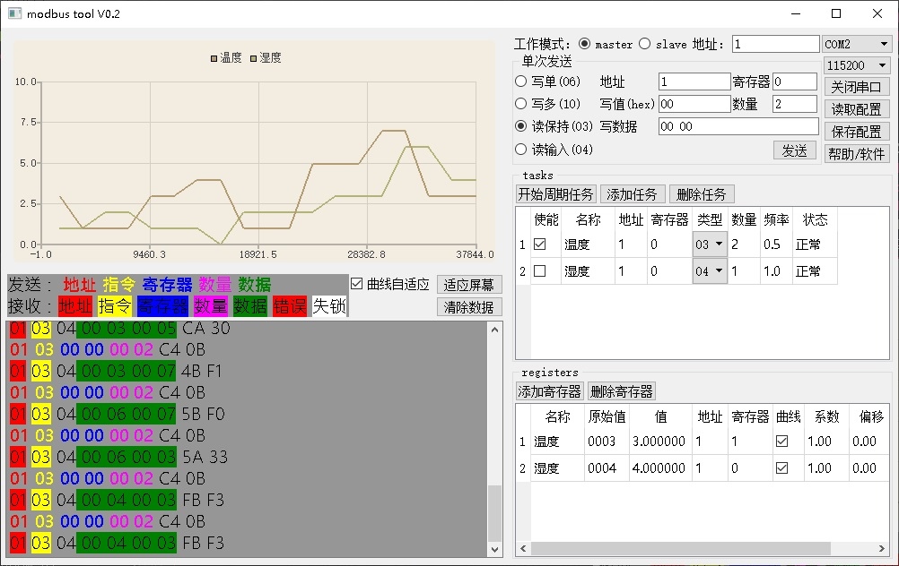

modbus_tool
功能
modbus工具软件,软件分为4部分功能：
1. 实现modbus主机的06、10、03、04号指令，对设备进行调试
2. 支持周期读任务自动发送
3. 可将读数显示成曲线
4. 通信数据通过彩色显示，区分不同的数据含义
5. modbus从机模拟
软件由配置文件组织，配置文件描述周期任务和数据的类型、曲线名称
使用说明

单次发送
作为modbus主，单次发送指令。
在单次发送界面中，填写发送地址、寄存器地址（10进制），然后选择发送类型，支持的发送类型包括：写单寄存器(0x06)、写多寄存器(0x10)、读保持寄存器(0x03)、读输入寄存器(0x04)。
若是写单寄存器(06)，则需要填写：地址、寄存器、写值（16进制）
若是写多寄存器(10)，则需要填写：地址、寄存器、数量、写数据（16进制数组）
若是读保持寄存器(03)，则需要填写：地址、寄存器、数量
若是读输入寄存器(04)，则需要填写：地址、寄存器、数量
填写完成后点击发送按钮发送，在log区域会显示发送的指令和接收到的数据。
周期任务
软件在modbus主模式下，可以通过配置，实现读指令的周期发送，软件中有一个100Hz的定时器，可以按设定的频率发送任务。但所有任务的发送数量不能超过每秒100个。
按“添加任务”按钮添加一个新的任务；
按“删除任务”按钮删除选中的任务；
直接点击任务列表中的项，可以修改任务的属性：名称、设备地址、起始寄存器、数量、频率（单位Hz）
可以设定每个任务是否使能，在表格的最后显示每个任务的状态。
数据编辑
可在界面上编辑寄存器，寄存器的属性包括：名称、值(包括原始值和值，修改其中一个，另一个随之刷新)、地址、寄存器、是否显示曲线、值的变换系数、值的变换偏移。
点击添加寄存器可以添加一个寄存器，电机删除寄存器按钮删除当前选中的寄存器。
值的计算：原始值乘以系数，加上偏移，得到值。
寄存器的更新：当接收到数据后，若数据中有寄存器是界面中寄存器列表中的项，就会更新界面的值的显示，并根据选择更新曲线。
modbus从机模拟
当工作模式选择为从机模式的时候，软件模拟modbus从机工作。从机的寄存器配置为界面registers区域的配置。当软件接收到主机指令后，就发送相应的回复，寄存器的值可以在界面上直接修改。
BUG反馈：
yangzigy@sina.com
技术博客: https://www.cnblogs.com/yangzifb
github: https://github.com/yangzigy